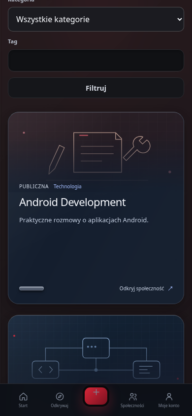

- Wyzwanie
- Rozbudowa odkrywania społeczności wymagała połączenia tematów, nazw i fragmentów rozmów bez osobnego pobierania każdego wpisu.
- Analiza
- Porównanie istniejących list i feedu wykazało brak jednego odczytu obejmującego ten kontekst. Testy kontrolowały liczbę zapytań i zachowanie widoczności.
- Przyczyna
- Istniejące API obsługiwało osobne listy, a nowy sposób odkrywania potrzebował danych zbiorczych.
- Decyzja i poprawka
- Rozszerzono dotychczasowy moduł treści o zbiorcze wyszukiwanie i podglądy. Interfejs pobiera fragmenty po otwarciu tematu oraz obsługuje klawiaturę i ograniczenie animacji.
- Weryfikacja
- Raport z 14.10.2026 dokumentuje testy API, stałą liczbę zapytań dla 1 i 20 społeczności oraz przeglądarkowe scenariusze desktop i dotyk.
- Wynik
- Lokalnie zweryfikowano odkrywanie tematów i rozmów z zachowaniem reguł dostępu. Aktualne wdrożenie pozostaje niepotwierdzone.
- Źródło
- community-discovery
Platformy
Lud&Pra / ProgressKit Community
Platforma społecznościowa rozwijana wokół społeczności tematycznych, rozmów i przejrzystej moderacji.
W rozwoju
Od potrzeby do produktu
Dla kogo
- Uczestnicy społeczności tematycznych
- Twórcy i administratorzy społeczności
- Moderatorzy
Problem
Dyskusje potrzebują czytelnych zasad, uzasadnionych decyzji moderacyjnych i możliwości odwołania, a uczestnicy chcą łatwo odnajdywać interesujące społeczności.
Dlaczego powstał
Połączyć rozmowy i zarządzanie społecznością z jawnym procesem moderacji oraz kontrolą dostępu do treści.
Rozwiązanie
Modułowa platforma łączy konta, publikacje, komentarze, media i społeczności z obsługą zgłoszeń, uzasadnień i odwołań. Odkrywanie tematów korzysta z rzeczywistych treści dostępnych dla danego odbiorcy.
Architektura i technologie
- Next.js odpowiada za interfejs i renderowanie stron.
- ASP.NET Core jest modułowym monolitem z obszarami tożsamości, społeczności, treści, mediów, moderacji i powiadomień.
- PostgreSQL i Entity Framework Core utrwalają dane; odczyty respektują widoczność społeczności i treści.
C# / .NET / ASP.NET Core / Entity Framework Core / PostgreSQL / Next.js / React / TypeScript / Docker
Potwierdzony zakres
- Konta, profile i zarządzanie sesjami
- Społeczności publiczne, prywatne i z ograniczonym dostępem
- Publikacje, odpowiedzi, komentarze i obrazy
- Zgłoszenia, decyzje moderacyjne i odwołania
- Wyszukiwanie społeczności, tagów i fragmentów rozmów
- Interfejs PL/EN/DE oraz responsywne karty i podglądy tematów
- Oznaczanie kont botów i kontrolowane mechanizmy automatyzacji
Wyniki i granice weryfikacji
- Raport walidacji z 14.10.2026 zapisuje 286 testów backendu i 154 testy frontendu zakończone PASS; nie uruchamiano ich ponownie podczas audytu portfolio.
- Ten sam checkpoint dokumentuje 170 kontroli przeglądarkowych na izolowanych danych oraz osobny lokalny smoke: 24 PASS i 5 SKIP.
- Weryfikacja lokalna obejmuje moderację i granice dostępu; nie stanowi potwierdzenia aktywnej społeczności ani aktualnego wdrożenia produkcyjnego.
Materiały z produktu
Rzeczywiste materiały z produktu. Wybierz obraz, aby go powiększyć. W podglądzie użyj strzałek; Escape zamyka powiększenie.


Wyzwania i rozwiązania
- Wyzwanie
- Rozbudowany feed potrzebował wiarygodnych informacji o rozmowie bez kosztu osobnego zapytania dla każdej karty.
- Analiza
- Test regresyjny porównał treści widoczne i pominięte oraz liczbę zapytań dla strony stu publikacji.
- Przyczyna
- Prezentacja rozmów wymagała agregatów, których dotychczasowy kontrakt feedu nie udostępniał.
- Decyzja i poprawka
- Dodano zbiorcze liczenie odpowiedzi, uczestników, ostatniej aktywności i obrazów w istniejącym feedzie.
- Weryfikacja
- Raport V2 z 14.10.2026 zapisuje regresję trzech zapytań SQL dla stu postów i wykluczenie nieopublikowanych komentarzy z metryk.
- Wynik
- Informacje o rozmowie wynikają z rzeczywistej treści. Raport dotyczy lokalnego środowiska testowego.
- Źródło
- community-feed-v2
Aktualny etap i dalsza droga
W rozwoju · Potwierdzono lokalny kod i zapisane testy. Aktualnej gotowości publicznej bety i stanu wdrożenia nie zweryfikowano w tym audycie.
Do potwierdzenia lub ukończenia
- Potwierdzenie aktualnej gotowości publicznej bety i wdrożenia
- Aktualny odbiór operacyjny i procesu moderacji
- Galeria przedstawia lokalne QA z danymi syntetycznymi; nie potwierdza publicznej bety.
Planowane kierunki
- Dalszy rozwój społeczności prawdziwych użytkowników
- Kontrolowana publikacja kolejnych etapów po aktualnej weryfikacji wymagań organizacyjnych i wdrożenia
Dostęp do projektu
Potwierdzono lokalny kod i zapisane testy. Aktualnej gotowości publicznej bety i stanu wdrożenia nie zweryfikowano w tym audycie.
Podstawa prezentacji
Zakres ustalono na podstawie kodu i materiałów wymienionych poniżej. Wyniki historycznych testów zachowują datę oraz zakres; nie oznaczają ponownego testu ani potwierdzenia produkcji.
- Bieżący kod platformy · code ·
c64296e0dfd67182ec368a00432b4c2ea3b36968
Moduły API, kontrakty i manifesty technologii; odczyt 15.10.2026 - Community Discovery: walidacja i podsumowanie, 14.10.2026 · report ·
c64296e0dfd67182ec368a00432b4c2ea3b36968
Zapisane wyniki lokalne, izolowane dane i oddzielny smoke; bez ponownego uruchomienia - Lud&Pra V2: przegląd, 14.10.2026 · report ·
aad44687c87e6b1243fe22db8facec260eb00913
Lokalny feed, sesje i agregacja rozmów; bez dowodu produkcji